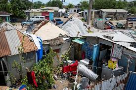

Decades of destruction(1940-1969)
Historical Hurricane Data
The mid-20th century saw Jamaica battered by some of its most devastating tropical storms on record. In August 1944, a powerful Category 3 hurricane carved a destructive path across the island with 120 mph winds, wiping out 90% of banana crops and killing at least 30 people. The 1950s proved particularly deadly - Hurricane King's torrential rains dumped 25 inches in 48 hours in 1950, while 1951's Hurricane Charlie became Jamaica's worst natural disaster of the century, claiming 152 lives with 125 mph winds and 50 million dollars in damage (equivalent to over 500 million today). The 1960s continued the pattern of destruction. Hurricane Flora's 60-inch rainfall in 1963 triggered deadly landslides, while other storms like Cleo (1964) and Buelah (1967) caused varying degrees of damage. This 30-year period demonstrated Jamaica's persistent vulnerability to extreme weather, with hurricanes repeatedly devastating agriculture, infrastructure, and communities across the island. The frequency and intensity of these storms underscored the Caribbean's ongoing climate challenges and the need for improved disaster preparedness in the region.